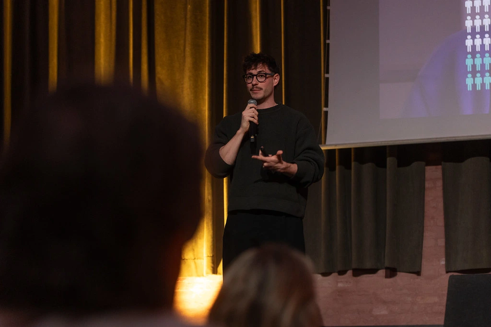
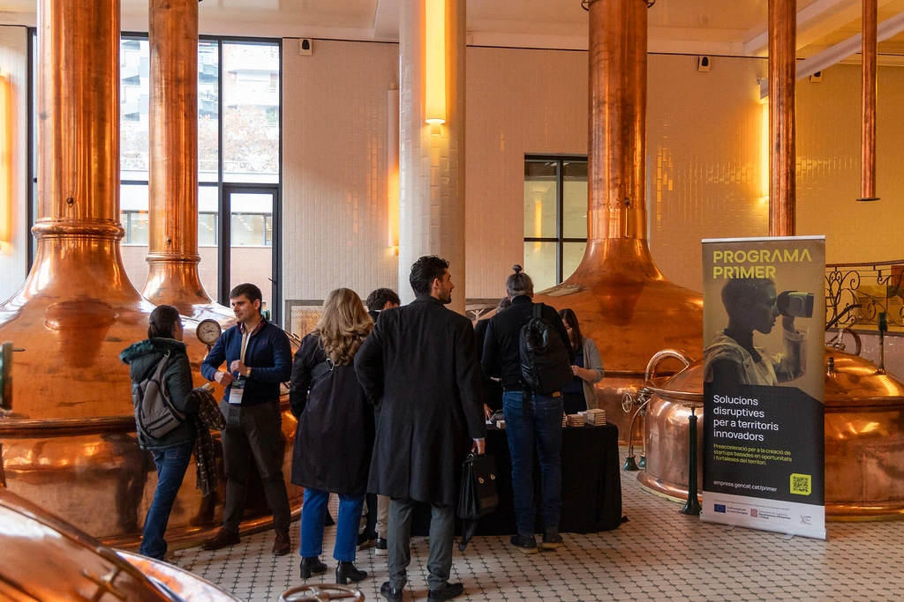
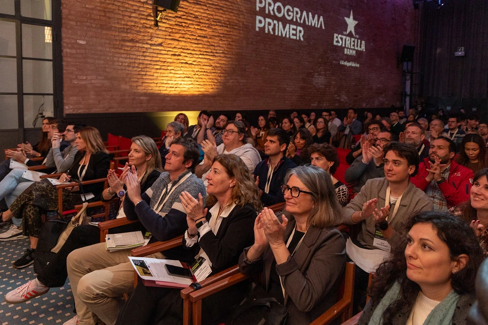
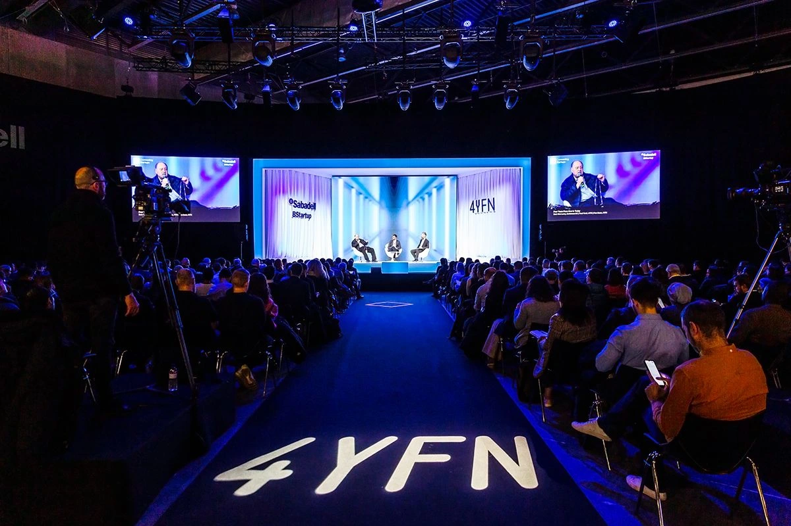

NeumaCare has been recognised as the best startup of the Programa Primer 2025, an initiative of the Catalan Government co-financed by the European Social Fund Plus. This award grants NeumaCare direct access to 4YFN 2026 — the leading startup event within the Mobile World Congress in Barcelona — opening the door to global visibility and strategic partnerships in healthcare technology.
What is Programa Primer?
The Programa Primer is a pre-acceleration programme funded by the Government of Catalonia and co-financed by the European Social Fund Plus. In its 2025 edition, the programme committed 1.7 million euros in funding and operated through:
- 32 pre-accelerator programmes across 17 regions of Catalonia
- Approximately 7,500 hours of training and mentoring
- Support for over 520 entrepreneurs
The programme is designed to validate early-stage startups and prepare them for growth, connecting founders with mentors, investors and corporate partners across sectors.

Innovation with real impact in healthcare
The recognition validates NeumaCare's approach to innovation with real health impact: humanising hospital environments through non-pharmacological, AI-driven sensory therapies focused on patient emotional wellbeing. Our platform adapts ambient light, sound and scent in real time based on each patient's physiological state — reducing anxiety, improving sleep quality and supporting clinical recovery without additional medication.


Gateway to 4YFN 2026 at Mobile World Congress
As the best startup award winner, NeumaCare earns direct entry to 4YFN 2026 — Four Years From Now — the flagship startup summit running alongside the Mobile World Congress. This platform will provide:
- Global visibility in front of leading startups, investors and corporations
- Strategic partnerships within the healthcare technology ecosystem
- Accelerated pathways for deploying the NeumaCare system in healthcare centres internationally
- Direct access to institutional investors and innovation funds

Two recognitions in one week
This award arrives just days after NeumaCare was also named best business project at the Premis Emprèn Dipta 2025 by the Diputació de Tarragona — a double recognition in a single week that confirms the momentum behind our clinical AI platform.

"We continue advancing with a clear purpose: to care for environments in order to better care for people. This recognition gives us even more energy to bring NeumaCare to every hospital that wants to offer a more humane experience."
— David Sevilla, CEO of NeumaCare
We are grateful to the Catalan Government, the Programa Primer team, all the mentors who walked alongside us, and every healthcare professional who believes that the future of medicine is not only clinical — it is also deeply human.